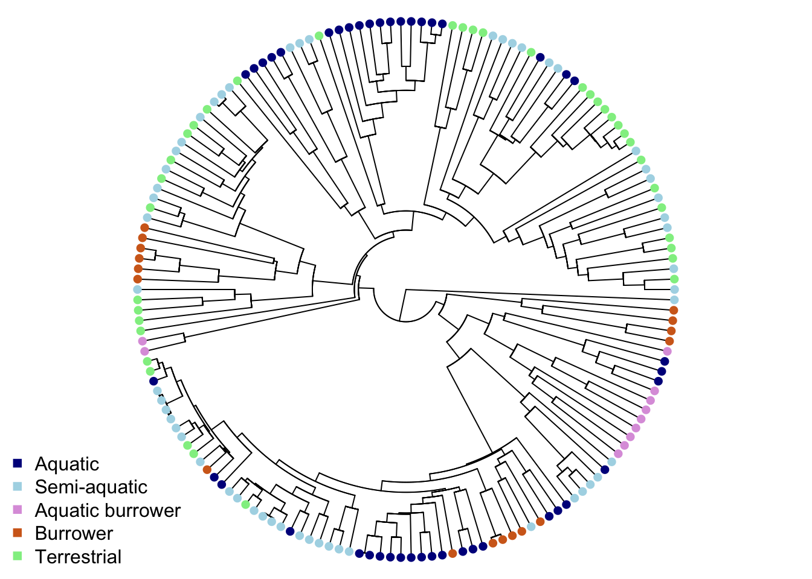
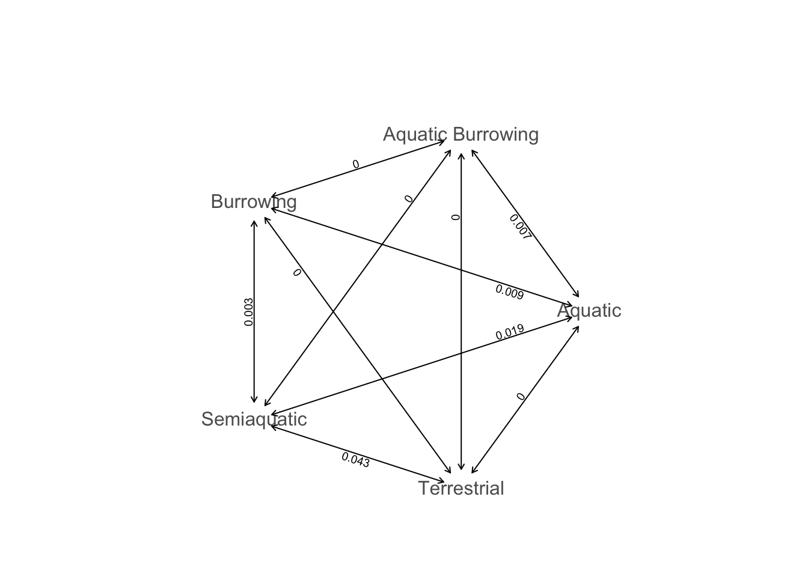
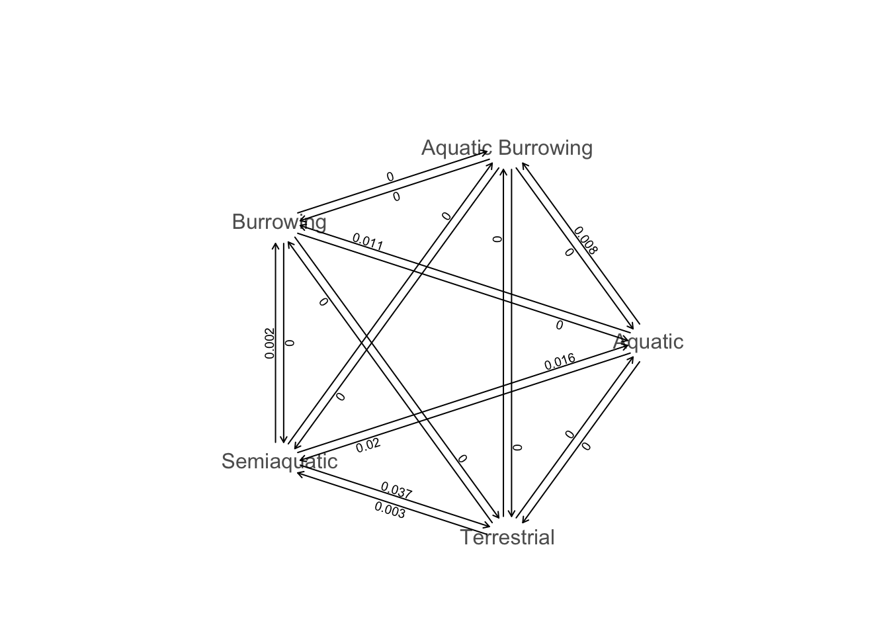
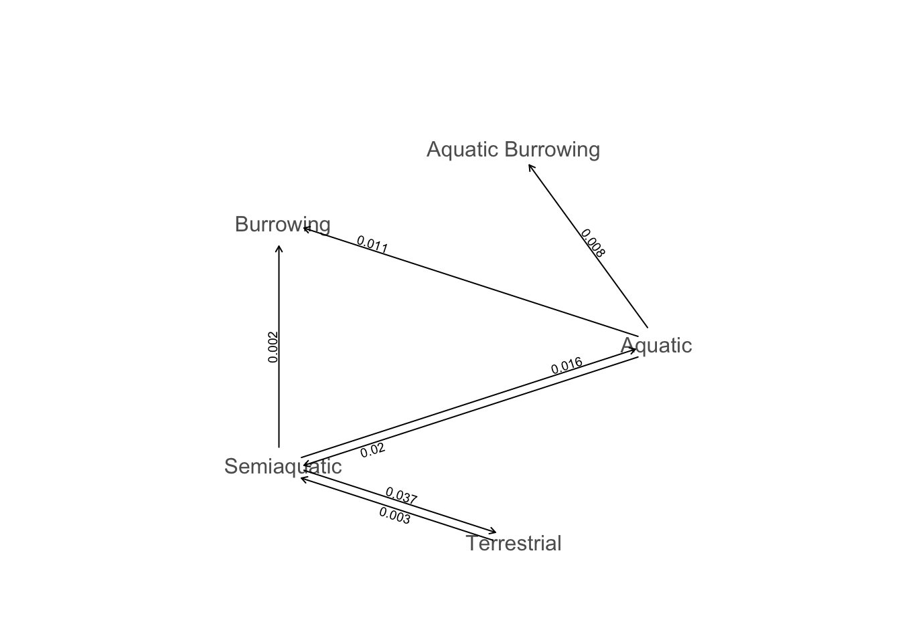
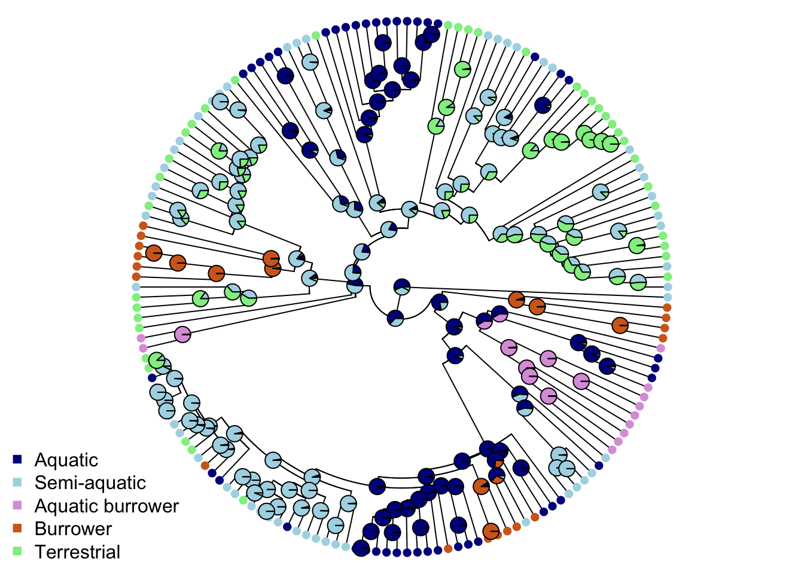

Chapter 8 Macroevolutionary models for discrete traits
The aims of this exercise are to learn how to use R to fit macroevolutionary models in R to discrete traits.
We will be using the evolution of head shape in natricine snakes as an example. The data and modified tree come from DEEPAK [CITE PAPER], and the tree comes from DEEPAK [CITE PAPER]. I’ve removed a few species and a few variables to make things a bit more straightforward. If you want to see the full results check out DEEPAK [CITE PAPER]!
8.1 Before you start
- Open the
08-ModelsDiscrete.RProjfile in the08-ModelsDiscretefolder to open your R Project for this exercise. - Make yourself a new R script for your code.
You will also need to install the following packages:
apegeigertreeplyrphytools
8.2 Preparation
To begin we need to load the packages for this practical.
Next we need to prepare the tree and data for the analyses. In the 04-Preparation exercise we read in our tree and data, checked them, and matched them so only species in both were retained. Please refer to that exercise for more details on how and why we do these things, or run through it now if you haven’t previously.
It is important to do these things before beginning a phylogenetic comparative analysis, so let’s run through that code again here.
# Read in the data
snakedata <- read_csv("data/snake-heads.csv")
# Check everything loaded corrected
glimpse(snakedata)## Rows: 206
## Columns: 9
## $ Species <chr> "Adelophis_foxi", "Afronatrix_anoscopus_2", "Am…
## $ Ecomorph <chr> "Burrowing", "Aquatic", "Terrestrial", "Terrest…
## $ Diet <chr> "annelids", "aquatic generalist", "anurans", "a…
## $ ReproductiveMode <chr> "Viviparous", "Oviparous", "Oviparous", "Ovipar…
## $ HeadLength <dbl> 12.560, 25.100, 15.060, 20.105, 19.950, 18.810,…
## $ HeadWidth <dbl> 6.60, 15.80, 7.82, 9.13, 10.32, 9.82, 8.39, 11.…
## $ HeadHeight <dbl> 5.43, 10.30, 5.40, 6.61, 7.56, 5.80, 6.40, 8.70…
## $ EyeDistance <dbl> 4.01, 7.40, 4.85, 5.85, 5.84, 5.42, 6.00, 6.05,…
## $ TotalLength <dbl> 105, 194, 106, 185, 165, 155, NA, 163, 130, 309…To load the tree we will use read.nexus.
# Read in the tree
snaketree <- read.nexus("data/snake-tree.nex")
# Check it loaded correctly
str(snaketree)## List of 4
## $ edge : int [1:496, 1:2] 250 251 252 253 254 255 256 257 258 259 ...
## $ edge.length: num [1:496] 4.695 2.225 0.587 0.307 0.832 ...
## $ Nnode : int 248
## $ tip.label : chr [1:249] "Rhabdophis_leonardi" "Rhabdophis_nuchalis_1" "Rhabdophis_nuchalis_2" "Rhabdophis_adleri_1" ...
## - attr(*, "class")= chr "phylo"
## - attr(*, "order")= chr "cladewise"Remember to check the tree is dichotomous, i.e. has no polytomies, rooted, and ultrametric.
## [1] TRUE## [1] TRUE## [1] TRUENext check that the species names match up in the tree and the data. This should reveal any typos and/or taxonomic differences that need to be fixed before going any further. I haven’t printed check here as we already did this in the previous exercise and it’s a long list but we have already checked these in advance. Do not skip this step for your own analyses!
# Check whether the names match in the data and the tree
check <- name.check(phy = snaketree, data = snakedata,
data.names = snakedata$Species)
# checkNext we combine the tree and data to exclude species that are not in both, using the treeplyr function make.treedata.
# Combine and match the tree and data
snakestuff <- make.treedata(tree = snaketree, data = snakedata,
name_column = "Species")
# Look at the tree
snakestuff$phy##
## Phylogenetic tree with 162 tips and 161 internal nodes.
##
## Tip labels:
## Rhabdophis_leonardi, Rhabdophis_nuchalis_3, Rhabdophis_swinhonis_1, Rhabdophis_nigrocinctus, Rhabdophis_tigrinus, Rhabdophis_tigrinus_lateralis, ...
##
## Rooted; includes branch lengths.## Rows: 162
## Columns: 8
## $ Ecomorph <fct> Semiaquatic, Terrestrial, Semiaquatic, Terrestr…
## $ Diet <fct> unknown, generalist, anurans, generalist, gener…
## $ ReproductiveMode <fct> Oviparous, Oviparous, Oviparous, Oviparous, Ovi…
## $ HeadLength <dbl> 25.640, 14.590, 18.030, 26.685, 23.760, 34.135,…
## $ HeadWidth <dbl> 13.72, 7.42, 8.58, 14.62, 13.94, 19.33, 11.79, …
## $ HeadHeight <dbl> 10.81, 5.79, 6.68, 9.83, 8.88, 12.90, 8.46, 8.6…
## $ EyeDistance <dbl> 8.16, 5.17, 5.74, 9.50, 7.89, 10.39, 8.27, 8.43…
## $ TotalLength <int> 120, 79, 123, 262, 132, 199, 226, 224, NA, NA, …Overall we have 162 species in the data and the tree.
Then we replace the removed species names column, and save the data as a data frame for later analyses.
# Make a new column called tiplabel with the tip labels in it
snakestuff$dat$tiplabel <- snakestuff$phy$tip.label
# Force mydata to be a data frame
mydata <- as.data.frame(snakestuff$dat)Finally we save the tree:
Now we’re ready to run our analyses!
8.3 Models of evolution for discrete traits
For fitting simple models of evolution to discrete data we will use the fitDiscrete function in the R package geiger. fitDiscrete is a likelihood based method, so the output will give the maximum likelihood (ML) estimates of the parameters.
As an example, let’s look at the evolution of ecomorphs in our snake data. Before we start let’s make sure we have an idea of what these data look like.
# How many species are in each category of ecomorph?
mydata %>%
group_by(Ecomorph) %>%
summarise(number = n())## # A tibble: 5 x 2
## Ecomorph number
## <fct> <int>
## 1 Aquatic 43
## 2 Aquatic Burrowing 11
## 3 Burrowing 17
## 4 Semiaquatic 54
## 5 Terrestrial 37We can also visualize these variables on our tree by plotting them with colours. We’ll then create a vector of five colours for the ecomorphs. These need to be in alphabetical order, so the colours should be in the order Aquatic, Aquatic burrower, Burrower, Semi-aquatic, Terrestrial.
# Set up list of colours
ecomorph.colors <- c("darkblue", "plum", "chocolate", "lightblue", "lightgreen")Finally we can plot the tree with coloured tip labels to match the ecomorphs. I’ve rearranged the colour order in the legend so it makes more sense biologically (i.e. putting the aquatic and Semi-aquatic next to each other rather than ordering it alphabetically). To make things a bit easier to see I’ve left off the tip labels.
# Plot the tree with colours at the tips to represent ecomorph
plot(mytree, cex = 0.5, adj = c(0.2), type = "fan",
no.margin = TRUE, show.tip.label = FALSE)
tiplabels(pch = 16, col = ecomorph.colors[mydata$Ecomorph])
legend("bottomleft", pch = 15, bty = "n",
legend = c("Aquatic", "Semi-aquatic", "Aquatic burrower",
"Burrower", "Terrestrial"),
col = c("darkblue", "lightblue", "plum",
"chocolate", "lightgreen"))
Some ecomorphs are clustered, but others appear across the phylogeny (this is the result of some pretty cool convergent evolution - check out DEEPAK CITE PAPER for more details).
8.3.1 Fitting the ER, SYM and ARD models of evolution using fitDiscrete
We’ll fit three commonly used evolutionary models to the data; the equal rates (ER) model, the symmetric rates (SYM) model and the all rates different (ARD) model.
As a quick reminder, in the ER model, transitions between any pair of states occur at the same rate and are therefore equally probable. This is also known as the Mk1 model because it as a Markov model (Mk) with only 1 parameter (k).
In the SYM model transitions between any pair of states occurs at the same rate regardless of direction, but that the rate of change differs among states. A symmetric model with only 2 states becomes an equal rates (Mk1) model.
Finally, in the ARD model all transitions between pairs of states occurs at different rates. It’s important to be wary of over-fitting with this model as it can result in a lot of rates when you have more than a few states.
For more details on these models please see the Primer.
We are going to use the package geiger to fit models in this exercise, so we need the additional preparation step we first met in chapter 05-PhyloSignal. We need to create an object in R that only contains the variable required, and the species names (so we can match it up to the tree).
We use the function pull to extract just the ecomorph values. We then name these values with the species names from mydata using the function names. Note that this requires the trait data is in the same order as the tree tip labels, but luckily make.treedata does this automatically.
# Create ecomorph containing just ecomorph values
ecomorph <- pull(mydata, Ecomorph)
# Make sure ecomorph is a character, not a factor
ecomorph <- as.character(ecomorph)
# Look at the first few rows
head(ecomorph)## [1] "Semiaquatic" "Terrestrial" "Semiaquatic" "Terrestrial" "Terrestrial"
## [6] "Terrestrial"# Give log head length names = species names at the tips of the phylogeny
names(ecomorph) <- mydata$tiplabel
# Look at the first few rows
head(ecomorph)## Rhabdophis_leonardi Rhabdophis_nuchalis_3
## "Semiaquatic" "Terrestrial"
## Rhabdophis_swinhonis_1 Rhabdophis_nigrocinctus
## "Semiaquatic" "Terrestrial"
## Rhabdophis_tigrinus Rhabdophis_tigrinus_lateralis
## "Terrestrial" "Terrestrial"Now we have a list of values with associated species names.
To fit the ER model we can then use the code below.
Let’s look at the output for the equal rates model:
## GEIGER-fitted comparative model of discrete data
## fitted Q matrix:
## Aquatic Aquatic Burrowing Burrowing
## Aquatic -0.034973712 0.008743428 0.008743428
## Aquatic Burrowing 0.008743428 -0.034973712 0.008743428
## Burrowing 0.008743428 0.008743428 -0.034973712
## Semiaquatic 0.008743428 0.008743428 0.008743428
## Terrestrial 0.008743428 0.008743428 0.008743428
## Semiaquatic Terrestrial
## Aquatic 0.008743428 0.008743428
## Aquatic Burrowing 0.008743428 0.008743428
## Burrowing 0.008743428 0.008743428
## Semiaquatic -0.034973712 0.008743428
## Terrestrial 0.008743428 -0.034973712
##
## model summary:
## log-likelihood = -176.839091
## AIC = 355.678181
## AICc = 355.703181
## free parameters = 1
##
## Convergence diagnostics:
## optimization iterations = 100
## failed iterations = 0
## number of iterations with same best fit = 100
## frequency of best fit = 1.00
##
## object summary:
## 'lik' -- likelihood function
## 'bnd' -- bounds for likelihood search
## 'res' -- optimization iteration summary
## 'opt' -- maximum likelihood parameter estimatesThis looks very similar to the output from fitContinuous in the 08-ModelsContinuous exercise. We’ve got a model summary, with log likelihoods and AIC scores, convergence diagnostics and an object summary. The only major difference is the first part, which gives us a fitted transition matrix or \(Q\) matrix, rather than a summary of model parameters. In fact the \(Q\) matrix is the model parameters for these models as it contains all the rates of change between different states. This is an equal rates model, so the off-diagonal elements are all same and show that the rate of change from one state to any other state is 0.00874.
Why are the diagonal elements of the \(Q\) matrix -0.034973712? The rows of the \(Q\) matrix must sum to zero: -0.034973712 + (4 * 0.008743428) = 0.
To fit the SYM model we just switch the model name. Note that this might be a bit slow on your computer as we have quite a lot of different ecomorphs, so a lot of different rates to fit. A good point to grab a coffee/tea/biscuit!
## GEIGER-fitted comparative model of discrete data
## fitted Q matrix:
## Aquatic Aquatic Burrowing Burrowing
## Aquatic -3.410177e-02 6.787716e-03 8.536122e-03
## Aquatic Burrowing 6.787716e-03 -6.787716e-03 1.298292e-35
## Burrowing 8.536122e-03 1.298292e-35 -1.172385e-02
## Semiaquatic 1.877793e-02 7.561620e-31 3.187730e-03
## Terrestrial 2.213499e-23 6.245556e-20 9.633946e-20
## Semiaquatic Terrestrial
## Aquatic 1.877793e-02 2.213499e-23
## Aquatic Burrowing 7.561620e-31 6.245556e-20
## Burrowing 3.187730e-03 9.633946e-20
## Semiaquatic -6.519591e-02 4.323024e-02
## Terrestrial 4.323024e-02 -4.323024e-02
##
## model summary:
## log-likelihood = -148.281974
## AIC = 316.563949
## AICc = 318.020902
## free parameters = 10
##
## Convergence diagnostics:
## optimization iterations = 100
## failed iterations = 0
## number of iterations with same best fit = 2
## frequency of best fit = 0.02
##
## object summary:
## 'lik' -- likelihood function
## 'bnd' -- bounds for likelihood search
## 'res' -- optimization iteration summary
## 'opt' -- maximum likelihood parameter estimatesAgain the \(Q\) matrix is the key output here. You could just read the numbers, we can see this more clearly if we plot the \(Q\) matrix for the model:
 The transition rate between Semi-aquatic and Terrestrial is highest (0.043), followed by transitions between Semi-aquatic and Aquatic (0.019). Burrowing and Aquatic (0.009) and Aquatic Burrowing and Aquatic (0.007) have the next highest rates, followed by Burrowing and Semi-aquatic (0.003). All the other rates are < 0.001 so they appear as zeros on this plot
Finally let’s fit the ARD model. Again this may take some time! Go and grab a tea/coffee/biscuit or take a short break.
## GEIGER-fitted comparative model of discrete data
## fitted Q matrix:
## Aquatic Aquatic Burrowing Burrowing
## Aquatic -3.871095e-02 7.710925e-03 1.070720e-02
## Aquatic Burrowing 2.966658e-08 -2.968995e-08 6.508677e-12
## Burrowing 1.256202e-11 1.899379e-11 -2.336514e-08
## Semiaquatic 1.592947e-02 1.268934e-11 2.496574e-03
## Terrestrial 1.404585e-09 1.052951e-10 2.519973e-12
## Semiaquatic Terrestrial
## Aquatic 2.029283e-02 9.013088e-14
## Aquatic Burrowing 8.331062e-12 8.532529e-12
## Burrowing 2.332776e-08 5.825714e-12
## Semiaquatic -5.538251e-02 3.695646e-02
## Terrestrial 2.678831e-03 -2.678832e-03
##
## model summary:
## log-likelihood = -145.506019
## AIC = 331.012038
## AICc = 336.969484
## free parameters = 20
##
## Convergence diagnostics:
## optimization iterations = 100
## failed iterations = 0
## number of iterations with same best fit = 1
## frequency of best fit = 0.01
##
## object summary:
## 'lik' -- likelihood function
## 'bnd' -- bounds for likelihood search
## 'res' -- optimization iteration summary
## 'opt' -- maximum likelihood parameter estimatesAgain the \(Q\) matrix is the key output. We can plot the \(Q\) matrix for the model:
 This is quite complex because in the ARD model we have different rates for each type of state change. Here, for example, the bottom left hand arrows joining Semi-aquatic and Terrestrial show that rates of change from Semi-aquatic to Terrestrial (0.037) are higher than those from Terrestrial to Semi-aquatic (0.003). These plots can be a little easier to read if we hide all the transitions where rates are < 0.001 as follows.

For now these plots are pretty simple, but you can add some code to make the arrows different sizes etc. if you need to using the code here http://blog.phytools.org/2020/09/graphing-fitted-m-k-model-with.html. Also check out future versions of phytools which should have these functions added.
8.3.2 Comparing models of evolution using AIC
As we discussed in the continuous traits exercise in 08-ModelsContinuous, we often want to know which of the models fits our variable best. We can use fitDiscrete to fit the models we are interested in and then compare them using AIC. We can extract the AICs from the models we fitted above as follows:
## [1] 355.6782## [1] 316.5639## [1] 331.012The “best” model is the one with the smallest AIC. Here the best model of evolution appears to be the SYM model, whereby rates of transition are the same in both directions, but are different for the different pairs of ecomorphs.
Alternatively we can use \(\Delta\)AIC or AIC weights to compare our models using the following code and the geiger function aicw:
aic.scores <- setNames(c(equal$opt$aic, sym$opt$aic, ard$opt$aic),
c("equal", "symmetric", "different"))
aicw(aic.scores)## fit delta w
## equal 355.6782 39.11423 3.207273e-09
## symmetric 316.5639 0.00000 9.992717e-01
## different 331.0120 14.44809 7.283178e-04aicw outputs the AIC (fit), \(\Delta\)AIC (delta) and AIC weights (w) for each of the models we fitted. The best model is the model with \(\Delta\)AIC = 0 or with AICw closest to 1. Using \(\Delta\)AIC we can conclude that the SYM model is the best fit to the data.
8.4 Ancestral state estimations
I’m not a big fan of ancestral state estimation as you probably realised from the Primer! There are many reasons to be highly sceptical of ancestral state estimates and interpretations of macroevolutionary patterns and process that are based on them. However, if you want to know if evolutionary tempo or mode have varied over clade history based on the state of a discrete trait as we intend to do in the next chapter, you’ll need to do it so you can assign each node to a particular state.
We’ll use ape’s ace function here. There are other options out there, for example in the phytools package, but ace will work for our purposes.
To perform ancestral state estimation of ecomorphs for snakes we can use the ecomorph object we made earlier and used to fit the ER, SYM and ARD models. Recall that ecomorph is just the Ecomorph column from the snake heads dataset, in the same order as the tips in the tree, with names equal to the tip labels/Species names in the tree.
## Rhabdophis_leonardi Rhabdophis_nuchalis_3
## "Semiaquatic" "Terrestrial"
## Rhabdophis_swinhonis_1 Rhabdophis_nigrocinctus
## "Semiaquatic" "Terrestrial"
## Rhabdophis_tigrinus Rhabdophis_tigrinus_lateralis
## "Terrestrial" "Terrestrial"To perform an ancestral state estimation of ecomorphs under the symmetric model (the best fitting model for the data as discovered above) we use this code:
# Ancestral state estimation of ecomorph under the SYM model
ancestral_ecomorphs <- ace(ecomorph, mytree, type = "discrete", model = "SYM")## Warning in log(comp[-TIPS]): NaNs produced## Warning in sqrt(diag(solve(h))): NaNs producedYou should notice a series of warning messages appear that say NaNs produced and NA/Inf replaced by maximum positive value. Don’t worry about this – it happens when rates for one transition are particularly low (and we know from above that many of the transition rates were < 0.001) but doesn’t really affect our node state estimates.
ace now defaults to a joint estimation procedure, where the ancestral states are optimized based on all information in the tree, not just the states at descendant tips. Older versions of ace did not do this, so be wary of this when reading older critiques of this method
We can look at the first few rows of our ancestral state estimates by typing:
In this matrix the rows correspond to nodes in the tree (although the numbering is bit off; we don’t need to worry about this here but it will come up in the next exercise) and the five columns give the scaled likelihoods that the node is in each of the different ecomorphs.
The scaled likelihoods are like probabilities, so for the first node, the probability of it being Aquatic is highest (probability = 0.5417), followed by the probability of it being Semi-aquatic (0.3587), Terrestrial (0.0755), Burrowing (0.0206), or Aquatic Burrowing (0.0035). These scaled likelihoods can be visualized with pie charts on the tree we plotted earlier byt adding the nodelabels line of code below.
# Plot the tree with colours at the tips and nodes to represent ecomorph
plot(mytree, cex = 0.5, adj = c(0.2), type = "fan",
no.margin = TRUE, show.tip.label = FALSE)
tiplabels(pch = 16, col = ecomorph.colors[mydata$Ecomorph])
nodelabels(pie = ancestral_ecomorphs$lik.anc, piecol = ecomorph.colors, cex = 0.5)
legend("bottomleft", pch = 15, bty = "n",
legend = c("Aquatic", "Semi-aquatic", "Aquatic burrower",
"Burrower", "Terrestrial"),
col = c("darkblue", "lightblue", "plum",
"chocolate", "lightgreen"))
Aquatic is most commonly estimated as the ancestral ecomorph for natricine snakes, with Semi-aquatic as a close second, and with multiple transitions to other ecomorphs throughout the tree.
Ancestral state estimates (not reconstructions) are, at best, weighted averages of your trait based on branch lengths of the phylogeny and the model of evolution used. If your phylogeny or traits or model have error (and they always will) then your ancestral state estimates should be interpreted with care.
8.5 Summary
You should now know how to fit simple models of evolution to discrete trait data in R.
8.6 Practical exercises
In the data folder there is another tree (primate-tree.nex) and dataset (primate-data.csv) for investigating the evolution of primate life-history variables. These data come from the PanTHERIA database (Jones et al. 2009) and 10kTrees (Arnold, Matthews, and Nunn 2010).
Read in the tree and data, then prepare them for a PCM analysis (you may have already done this in a previous exercise which should save you some time). Fit equal rates, symmetric rates and all rates different models to the social status variable for Primates (SocialStatus). Note that social status has two states: non-social (1) or social (2). Then answer the following questions.
- Which model fits best?
- What is the transition rate from non-social (1) to social (2), and vice versa, in the all rates different model? What does this mean biologically?
- Plot ancestral state estimates of social status (from the ARD model) on the phylogeny. Is the root node estimated as being non-social or social?
- Why didn’t I ask you to fit the symmetric model?
References
Arnold, Christian, Luke J Matthews, and Charles L Nunn. 2010. “The 10kTrees Website: A New Online Resource for Primate Phylogeny.” Evolutionary Anthropology: Issues, News, and Reviews 19 (3): 114–18.
Jones, Kate E, Jon Bielby, Marcel Cardillo, Susanne A Fritz, Justin O’Dell, C David L Orme, Kamran Safi, et al. 2009. “PanTHERIA: A Species-Level Database of Life History, Ecology, and Geography of Extant and Recently Extinct Mammals: Ecological Archives E090-184.” Ecology 90 (9): 2648–8.